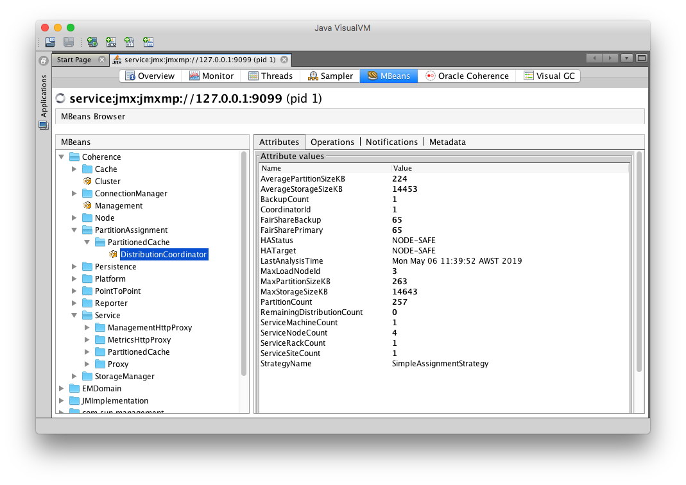
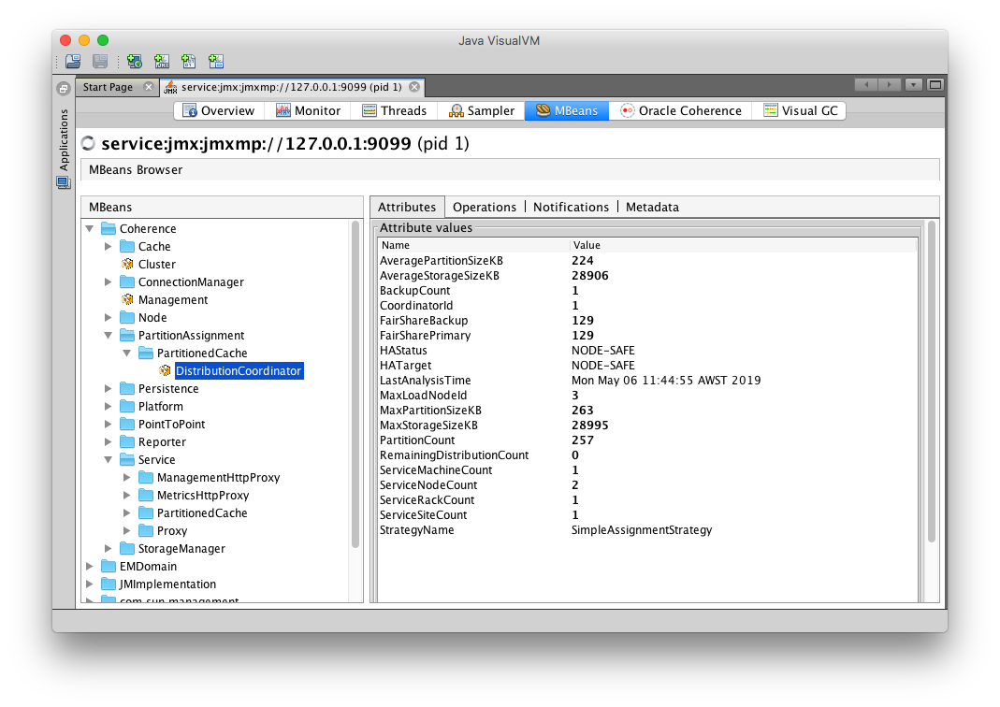

Scaling a Coherence Deployment
The Coherence Operator leverages Kubernetes Statefulsets to ensure that scale up and scale down operations are carried out one pod at a time.
When scaling down, you must only scale down by one pod at a time and check for HAStatus to continue. This ensures that the cluster nodes have sufficient time to re-balance the cluster data to ensure no data is lost.
This sample shows you how to scale up a Statefulset using kubectl and scale down one pod at a time and check HAStatus through VisualVM.
Return to Coherence Operator samples / Return to samples
Prerequisites
- Install Coherence Operator
Ensure you have already installed the Coherence Operator using the instructions here.
- Download the JMXMP connector JAR
Refer to the instructions here to download the JMXMP connector JAR.
Installation Steps
- Install the Coherence cluster
Use the following command to install the cluster with only 2 replicas and 1 MBean Server Pod, which is used to check HAStatus.
bash
$ helm install \
--namespace sample-coherence-ns \
--name storage \
--set clusterSize=2 \
--set cluster=coherence-cluster \
--set imagePullSecrets=sample-coherence-secret \
--set prometheusoperator.enabled=false \
--set logCaptureEnabled=false \
--set store.jmx.enabled=true \
--set store.jmx.replicas=1 \
coherence/coherence
- Ensure both the pods are running:
bash
$ kubectl get pods -n sample-coherence-ns
console
NAME READY STATUS RESTARTS AGE
coherence-operator-66f9bb7b75-hqk4l 1/1 Running 0 13m
storage-coherence-0 1/1 Running 0 3m
storage-coherence-1 1/1 Running 0 2m
storage-coherence-jmx-54f5d779d-svh29 1/1 Running 0 2m
You can see a pod prefixed with storage-coherence-jmx in the output.
- Add data to the cluster through the Coherence Console.
Connect to the Coherence Console using the following command to create a cache:
bash
$ kubectl exec -it --namespace sample-coherence-ns storage-coherence-0 bash /scripts/startCoherence.sh console
At the Map (?): prompt, enter cache test. This creates a cache in the service PartitionedCache.
Use the following command to add 50,000 objects of size 1024 bytes, starting at index 0 and using batches of 100.
bash
bulkput 50000 1024 0 100
console
Wed Apr 24 01:17:44 GMT 2019: adding 50000 items (starting with #0) each 1024 bytes ...
Wed Apr 24 01:18:11 GMT 2019: done putting (26802ms, 1917KB/sec, 1865 items/sec)
At the prompt, type size and it should show 50000.
- Scale to 4 nodes using
kubectlcommand.
Scale the Statefulset to 4 nodes:
bash
$ kubectl scale statefulsets storage-coherence --namespace sample-coherence-ns --replicas=4
bash
$ kubectl get pods -n sample-coherence-ns
console
NAME READY STATUS RESTARTS AGE
storage-coherence-0 1/1 Running 0 10m
storage-coherence-1 1/1 Running 0 9m
storage-coherence-2 1/1 Running 0 3m
storage-coherence-3 1/1 Running 0 1m
Wait for the number of coherence-storage pods to be 4 and all of them in Running status.
- Check the size of the cache
Repeat Step 3 to access the console and to confirm that the cache size is 50000.
- Port forward to the MBean server pod:
Use the instructions here in step 3 to port forward to the MBean server pod.
- Connect through VisualVM or JConsole:
Use the instructions here in step 5 or 6 to connect to the cluster using VisualVM or JConsole.
- Check HAStatus value of PartitionedCache service.
Note: VisualVM is used in this sample.
Select the MBean tab in VisualVM and expand Coherence -> PartitionAssignment -> PartitionedCache -> DistributionCoordinator.
You can see the value of HAStatus as NODE-SAFE and the ServiceNodeCount as 4.

Ensure the HAStatus is correct to continue further.
- Scale down 1 node using
kubectl
bash
$ kubectl scale statefulsets storage-coherence --namespace sample-coherence-ns --replicas=3
Wait until the service PartitionedCache has HAStatus other than ENDANGERED and ServiceNodeCount of 3.
Then, scale down the replicas to 2 nodes.
bash
$ kubectl get pods -n sample-coherence-ns
console
NAME READY STATUS RESTARTS AGE
storage-coherence-0 1/1 Running 0 22m
storage-coherence-1 1/1 Running 0 21m
Your VisualVM MBeans tab should show the following:

- Check the size of the cache
Access the Coherence console and confirm that the size is still 50000. Ensure you type cache test at the Map: prompt and then size.
Verifying Grafana Data
If you have enabled Prometheus, access Grafana using the instructions here.
Verifying Kibana Logs
If you have enabled log capture, access Kibana using the instructions here.
Uninstall the Charts
Use the following command to delete the chart installed in this sample:
$ helm delete storage --purge
Before starting another sample, ensure that all the pods are removed from previous sample.
If you want to remove the coherence-operator, then use the helm delete command.